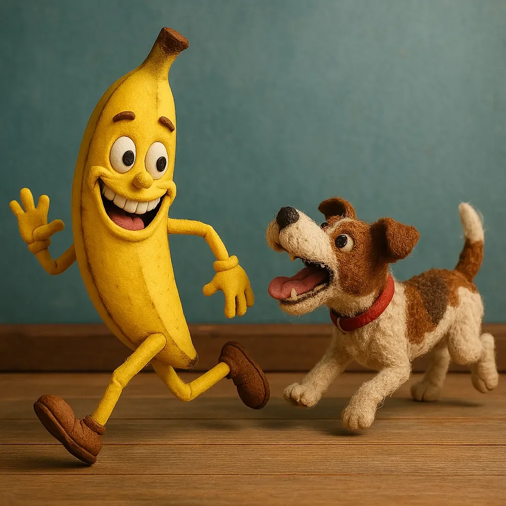

베니 바나나의 하루는 평범하게 시작됐다. 가볍게 기지개를 켜고, 과일 그릇에 있는 무표정한 사과들에게 졸린 눈으로 고개를 끄덕인 후, 헨더슨 가족이 주말 여행을 떠난 틈을 타 거실을 한 바퀴 조깅했다. 집안의 모든 식품들처럼, 베니도 아무도 지켜보지 않을 때 살아 움직였고, 식품들이 의식을 가지고 있다는 큰 비밀을 지키기 위해 조심했다.
[Benny the Banana’s day had started normally enough. A quick stretch, a sleepy nod to the stoic apples in the fruit bowl, and off he went for his morning jog around the Henderson living room—taking advantage of the humans’ weekend getaway. Like all of the produce in the household, Benny came alive when no one was watching, careful to maintain the great secret of sentient food.]
하지만 지금, 그는 팔다리를 휘젓고 껍질이 살짝 펄럭이며 마치 목숨이 달린 것처럼 나무 바닥을 가로질러 전력질주하고 있었다. “내가 왜 그 개한테 윙크를 했을까?!” 그는 겁에 질려 뒤를 흘깃 보며 헐떡였다. “난 그 녀석이 자고 있는 줄 알았어! 그냥 지루한 사과들한테서 드디어 반응을 끌어내려는 무해한 장난이었을 뿐인데!”
[But now, with limbs flailing and peel slightly flapping, he was sprinting across the hardwood floor like his life depended on it. “Why did I wink at that dog?!” he gasped, casting a terrified glance behind him. “I thought he was sleeping! It was supposed to be a harmless prank to finally get a reaction from those boring apples!”]
한편, 테리어 맥스는 개 인생 최고의 아침을 보내고 있었다. 헨더슨 가족이 살아 움직이는 음식과 그를 단둘이 남긴 적은 한 번도 없었다. “저게 움직였어!” 맥스는 참을 수 없는 기쁨으로 짖으며, 급커브를 돌 때 발톱이 살짝 미끄러졌다. “바나나는 움직이면 안 되는데! 그리고 절대 내게 표정을 지어선 안 돼!” 세상이 뒤집어졌고, 맥스는 기쁨에 찬 짖음과 끝없는 열정으로 그것을 다시 질서 있게 쫓아내기로 결심했다.
[Meanwhile, Max the terrier was having the best morning of his entire doggy life. The Hendersons had never left him alone with living, moving food before. “He moved!” Max barked with uncontainable glee, paws skidding slightly as he took a sharp corner. “Bananas aren’t supposed to move! And definitely not make faces at me!” The world had turned upside down and Max was determined to chase it back into order—with joyful barking and boundless enthusiasm.]
베니는 커피 테이블 쪽으로 지그재그로 달려가며 그것을 엄폐물로 사용하려 했지만, 계산을 잘못해 발판에 머리부터 쿵 부딪혔다. “아야! 내 칼륨!” 그는 이마를 문지르며 흐느꼈다. 그가 막 일어나려는 순간 맥스가 달려들었지만—완전히 빗나가 같은 발판에 부딪혔다. “괜찮아?” 베니가 여전히 바닥에 납작 엎드린 채로 물었다.
[Benny zigzagged toward the coffee table, hoping to use it for cover, but he miscalculated and thudded headfirst into a footstool. “Ow! My potassium!” he whimpered, rubbing his forehead. He was just about to get up when Max pounced—only to miss completely and crash into the same stool. “You good?” Benny asked, still flat on the floor.]
맥스는 일어나 앉았고, 그의 귀가 축 늘어졌다. “너 말을 해?!” 그는 믿을 수 없다는 듯 눈을 깜빡이며 외쳤다. “너 진짜로 말을 한다고? 단어랑 모든 걸 다?” 이제 그의 꼬리가 미친 듯이 흔들렸고, 이 마법 같은 과일 존재를 쫓아야 할지 친구가 되어야 할지 확신이 서지 않았다. “내가 냉장고 음식들이 살아있다고 했을 때 고양이는 내가 미쳤다고 했는데!”
[Max sat up, his ears flopping. “You talk?!” he exclaimed, blinking in disbelief. “You talk talk? Like, words and everything?” His tail wagged wildly now, no longer sure if he wanted to chase or befriend this magical fruit being. “The cat said I was crazy when I told her I thought the refrigerator food was alive!”]
“그래, 나 말해! 그리고 춤도 추고! 가벼운 유산소 운동도 해!” 베니가 가슴을 내밀며 말했다. “하지만 지금은 밟히지 않았으면 좋겠어, 고마워.” 그는 다시 일어나 복도를 향해 달렸다. “휴전?” 그는 어깨 너머로 소리쳤다.
[Yes, I talk! And dance! And do light cardio!“ Benny said, puffing out his chest. "But right now, I’d like to not be trampled, thank you.” He scrambled up again and made for the hallway. “Truce?” he yelled over his shoulder.]
여전히 헐떡이던 맥스는 고개를 갸웃했다. “잠깐… 난 널 먹으려던 게 아니었어! 그냥 난… 모르겠어, 네 코를 톡 건드리거나? 네 얼굴을 핥거나? 널 잡거나? 넌 너무 쫓고 싶게 생겼어!” 그는 다시 달려나가며 꼬리를 헬리콥터 날개처럼 흔들었다. “달리는 것들은 쫓는 거야—개의 법칙이라고!”
[Max, still panting, tilted his head. “Wait… I wasn’t going to eat you! I just wanted to… I don’t know, boop your nose? Lick your face? Catch you? You looked so chaseable!” He took off again, tail wagging like a helicopter blade. “Things that run are for chasing—it’s dog law!”]
베니는 부엌으로 미끄러지듯 들어가며 주걱을 검처럼 움켜쥐었다. “물러서, 털복숭이 짐승아! 나는 칼륨이 가득한 평화의 전사다!” 그는 주걱을 극적으로 휘둘러 소금 통을 쓰러뜨렸다. 맥스는 미끄러지며 멈춰 서서, 재채기를 하고는 개들만이 할 수 있는 딸꾹질 같은 방식으로 웃기 시작했다.
[As Benny skidded into the kitchen, he grabbed a spatula like a sword. “Back, fuzzy beast! I am a potassium-packed warrior of peace!” He swung the spatula dramatically, knocking over a salt shaker. Max skidded to stop, sneezed, and started laughing in that hiccupy way only dogs can.]
그들은 서로를 바라보며, 둘 다 헐떡였다. 맥스의 흥분은 점차 호기심으로 가라앉았고, 베니의 두려움은 천천히 조심스러운 관심으로 변했다.
[They stared at each other, both panting. Max’s excitement gradually settled into curiosity, and Benny’s fear slowly transformed into cautious interest.]
“있잖아,” 맥스가 헐떡이는 사이에 말했다, “난 하루 종일 이 집에 혼자 있었어. 사람들은 내일까지 돌아오지 않을 거고. 사실… 좀 외로웠어.”
[“You know,” Max said between pants, “I’ve been alone in this house all day. The humans won’t be back until tomorrow. I’m actually… kind of lonely.”]
베니는 주걱을 내리며, 표정이 부드러워졌다. “과일 그릇도 꽤 조용해. 그 사과들은 몇 주 동안 제대로 된 말 한 마디 안 했어—그들이 중얼거리는 건 의사를 멀리 한다는 얘기뿐이야.”
[Benny lowered the spatula, his expression softening. “The fruit bowl gets pretty quiet too. Those apples haven’t said a worthwhile word in weeks—all they ever mumble about is how they keep doctors away.”]
맥스는 턱을 발에 대고 털썩 누웠다. “넌 이상해. 난 이상한 걸 좋아해.”
[Max flopped down, chin on his paws. “You’re weird. I like weird.”]
베니는 조금씩 다가가며 미소 지었다. “넌 시끄러워. 난 시끄러운 걸 좋아해.”
[Benny inched closer, grinning back. “You’re loud. I like loud.”]
베니가 우정의 손을 내밀자 맥스의 꼬리가 바닥을 쿵쿵 쳤다. 테리어는 부드럽게 코를 그 손에 대며, 악수와 같은 개의 방식으로 그들의 예상치 못한 동맹을 확정지었다.
[Max’s tail thumped against the floor as Benny extended a hand in friendship. The terrier gently bumped his nose against it, sealing their unlikely alliance with the canine equivalent of a handshake.]
“소파에서 영화 마라톤 어때?” 베니가 제안했다.
[“Movie marathon on the couch?” Benny suggested.]
“내가 첫 번째 영화를 고를 수 있다면,” 맥스가 대답했고, 이미 거실을 향해 총총 걸어가고 있었다.
[“Only if I get to pick the first one,” Max replied, already trotting toward the living room.]